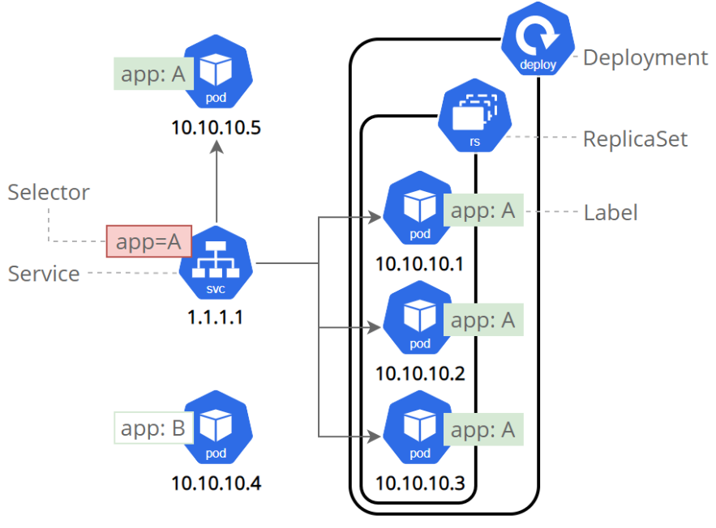

Introduction aux Services
Qu'est-ce qu'un Service Kubernetes ?
Un Service est une abstraction Kubernetes permettant de :
- Exposer les Pods au trafic externe ou interne.
- Assurer l'équilibrage de charge.
- Faciliter la découverte de services.
Les Services jouent un rôle crucial dans le réseau Kubernetes en rendant les applications accessibles tout en gérant automatiquement les changements de Pods (création/destruction) pour maintenir la connectivité.
Configurations des Services
- ClusterIP (par défaut) :
- Expose le Service uniquement au sein du cluster.
- Accessible via une IP interne.
- NodePort :
- Rend le Service accessible depuis l’extérieur du cluster à travers
<IP du nœud>:<port du nœud>. - Le port du nœud est généré dans la plage 30000-32767.
- Rend le Service accessible depuis l’extérieur du cluster à travers
- LoadBalancer :
- Crée un équilibreur de charge externe (nécessite un cloud provider).
- Attribue une IP externe fixe au Service.
- ExternalName :
- Redirige vers un nom externe, en renvoyant un enregistrement CNAME.
Labels et Services
Les labels (paires clé/valeur) sont utilisés pour :
- Identifier les objets Kubernetes (ex. : Pods).
- Définir les cibles des Services via un sélecteur.
Exemple
Un Service avec le sélecteur app: A cible tous les Pods ayant ce label, y compris ceux créés par un Deployment ou un ReplicaSet.

Création d'un premier Service
apiVersion: v1
kind: Service
metadata:
name: nginx-service
spec:
type: NodePort
selector:
app: nginx
ports:
- protocol: TCP
port: 80
targetPort: 80
Explications
- apiVersion : Version de l'API utilisée pour créer le Service (
v1ici). - kind : Type d'objet à créer (ici,
Service). - metadata > name : Nom du Service (
nginx-service). - spec :
- type : Type de Service (
NodePortdans cet exemple). - selector : Cible les Pods avec le label
app: nginx(correspond au Deployment précédent). - ports :
- port : Port exposé par le Service (80 ici).
- targetPort : Port du conteneur cible (80 dans les Pods).
Vérifier l'état d'un Service
Commande pour afficher les Services du cluster :
kubectl get services
Exemple de sortie :
NAME TYPE CLUSTER-IP EXTERNAL-IP PORT(S) AGE kubernetes ClusterIP 10.96.0.1 <none> 443/TCP 8m58s nginx-service NodePort 10.97.146.208 <none> 80:31220/TCP 4m35s`
- NAME : Nom du Service.
- TYPE : Type du Service (
ClusterIP,NodePort, etc.). - CLUSTER-IP : Adresse IP interne du Service.
- EXTERNAL-IP : IP externe (vide pour un NodePort ou ClusterIP).
- PORT(S) : Ports exposés, avec le format
<port>:<NodePort>/TCP. - AGE : Durée depuis la création du Service.
Accès au Service
Minikube
Pour accéder à l’application via Minikube, ouvrez un tunnel :
minikube service nginx-service --url`
Exemple de sortie :
http://127.0.0.1:38257
Laissez le terminal ouvert pour maintenir le tunnel actif.
Docker Desktop
Accessible directement via :
http://localhost:
Par exemple : http://localhost:31220.
Commande kubectl describe
La commande kubectl describe fournit des informations détaillées sur une ressource Kubernetes spécifique.
Exemple pour décrire un Service :
kubectl describe services nginx-service
Cette commande retourne des détails techniques sur le Service, comme ses sélecteurs, ses ports, et ses endpoints.
Résumé
- Les Services connectent les Pods aux consommateurs (internes ou externes) et permettent de gérer dynamiquement les changements dans le cluster.
- Types de Services courants :
- ClusterIP : Accès interne uniquement.
- NodePort : Accès externe via
<IP>:<NodePort>. - LoadBalancer : Accès via un équilibreur de charge.
- ExternalName : Redirection vers un service externe.
- Les labels jouent un rôle clé dans la sélection des Pods cibles.
Les Services sont essentiels pour exposer les applications à l’extérieur ou au sein d’un cluster Kubernetes.